DateTime & Time Series Data
Master Timestamp Parsing, Chronological Resampling, Rolling Averages, and Temporal Feature Engineering in Pandas
1. Introduction — What are DateTime and Time Series Data?
Real-world businesses aur modern physical devices continuously generate data with timestamps. Har e-commerce order, college attendance check-in, ATM swipe, stock trade, aur smart factory sensor reading ke sath ek exact point in time attach hota hai. Yeh chronological stream Time Series Data kehlata hai.
Scenario A — College RFID Attendance:
University ke main gate pe student ID swipe hota hai: "2026-10-15 08:55:23". College administration ko yeh dekhna hai: Kitne students on-time aaye? Kis din (Monday vs Friday) attendance drop hoti hai? Average campus stay duration kitna hai?
Scenario B — E-Commerce Flash Sale Telemetry:
Ek online store pe festive season mein 10,000 orders aate hain. Product leads ko analyze karna hai: Kaunse ghante (e.g. 8 PM - 10 PM) sales peak karti hai? Daily revenue ki 7-day rolling velocity kya hai? Delivery dispatch duration kitni hai?
Scenario C — IoT Cold-Storage Telemetry:
Pharmaceutical vaccine storage mein har 5 minute mein sensor temperature log karta hai: "2026-10-15 10:05:00 → 4.2°C". Agar 1 hour ka rolling average threshold cross kare ya reading drop ho jaye, immediate emergency alarm trigger hona chahiye!
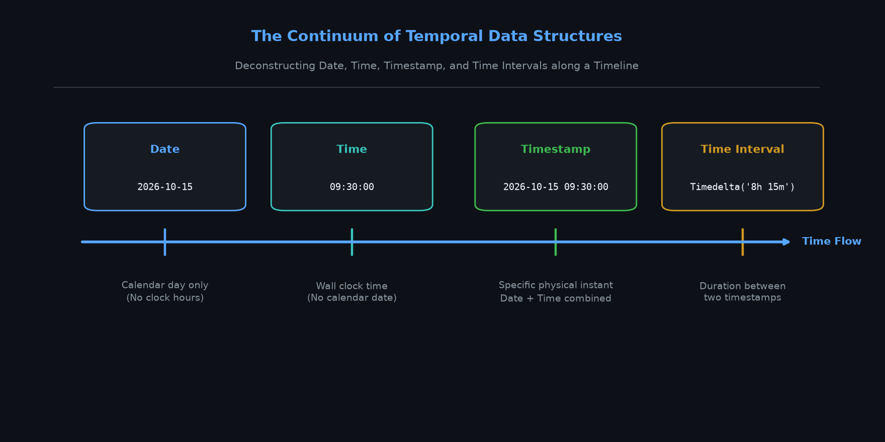
Core Concepts Introduced in This Topic:
- Date: Ek calendar day without time (e.g.,
2026-10-15). - Time: Wall-clock time without calendar date (e.g.,
09:30:00). - Timestamp (Datetime): Ek specific point in physical time combining date and clock time (e.g.,
2026-10-15 09:30:00). - Time Interval (Duration): Do timestamps ke beech ka elapsed time (e.g.,
Timedelta('8 hours 15 minutes')). - Chronological Order: Data points arranged strictly by time progression from earliest to latest.
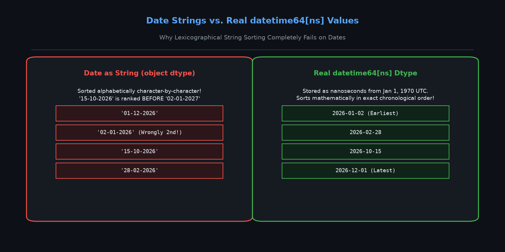
Jab aap CSV ya Excel file load karte hain (pd.read_csv()), Pandas by default dates ko raw text (object dtype) manta hai. Agar aap text dates pe sort_values() karenge, toh "15-10-2026" character '1' hone ki wajah se "02-01-2027" se pehle sort ho jayega! Real datetime64[ns] conversion ke baad hi true chronological sorting aur mathematical time intelligence unlock hoti hai.
2. Understanding Datetime Data Types in Pandas
Python aur Pandas mein time data ko represent karne ke liye standard building blocks hote hain. Inke beech ke difference ko samajhna zaroori hai:
| Object / Type | Origin / Library | Definition & Scope | Precision / Storage | Typical Representation |
|---|---|---|---|---|
datetime.datetime |
Python standard library | Single scalar point in calendar time. | Microsecond precision (10-6s) | datetime(2026, 10, 15, 9, 30) |
pd.Timestamp |
Pandas (extends Python datetime) | The core scalar datetime element of Pandas. Fully vector-compatible. | Nanosecond precision (10-9s) | pd.Timestamp("2026-10-15 09:30:00") |
datetime64[ns] |
NumPy / Pandas Series dtype | The internal vectorized columnar data type used in DataFrame columns. | 64-bit integer (nanoseconds from Unix Epoch: 1970-01-01) | Series(..., dtype="datetime64[ns]") |
pd.Timedelta |
Pandas | Duration or difference between two timestamps. | Nanosecond precision | pd.Timedelta(hours=8, minutes=15) |
Inspecting Data Types: df.dtypes and df.info()
Aapko hamesha df.dtypes check karna chahiye taaki yeh confirm ho sake ki dates object (string) nahi balki datetime64[ns] hain.
Code Example 1 (College): Checking Dtypes Before and After Datetime Conversion
Code Example 2 (E-Commerce): High-Precision Order Timestamps
3. Converting Strings using pd.to_datetime()
Pandas ka primary weapon dates parse karne ke liye pd.to_datetime() hai. Yeh function highly intelligent hai, lekin production data pipelines mein teen parameters master karna zaroori hai:
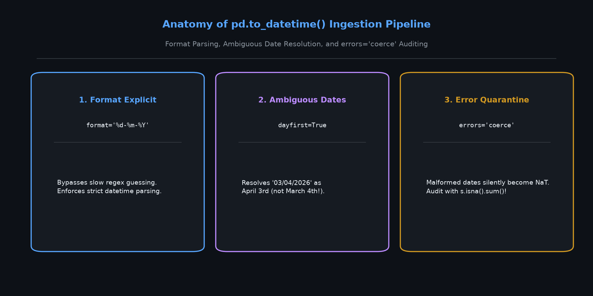
The Three Core Arguments of pd.to_datetime():
format=: Explicitly specifies the date format (e.g."%d-%m-%Y"). Yeh parsing speed ko 5x to 10x fast kar deta hai aur unexpected mismatches prevent karta hai!dayfirst=True: Ambiguous dates jaise"03/04/2026"ko resolve karta hai.dayfirst=Truemeans 3rd April (Indian/European standard);dayfirst=Falsemeans March 4th (US standard).errors="coerce": Agar dataset mein corrupted text (e.g."InvalidDate","N/A") ho, toh program crash hone ke bajaye unhe gracefullyNaT(Not a Time) mein convert kar deta hai.
errors="coerce" use karne ke baad hamesha df['col'].isna().sum() check karein!
Agar aap check nahi karenge, toh 100 corrupted dates silently NaT ban jayengi aur downstream revenue ya attendance calculation se drop ho jayengi without any warning!
Code Example 1 (College): Parsing Indian Date Format with Format Directives
Code Example 2 (E-Commerce): Resolving Ambiguous Day-First vs. Month-First Dates
4. Extracting Date & Time Components — The .dt Accessor
Jaise text columns ke liye .str accessor aur categorical columns ke liye .cat accessor hota hai, datetime series ke paas specialized .dt accessor hota hai. Isse aap raw timestamps se calendar aur clock features extract kar sakte hain:
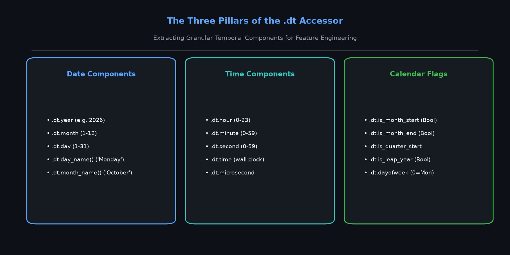
| Pillar Category | .dt Property / Method | Return Type & Output Range | Practical Analytical Use Case |
|---|---|---|---|
| Calendar Date | s.dt.year, month, day |
Integers (e.g. 2026, 10, 15) | Filtering by academic year or financial fiscal quarter. |
| Names | s.dt.day_name(), month_name() |
Strings ('Monday', 'October') | Weekday vs weekend business traffic analysis. |
| Clock Time | s.dt.hour, minute, second |
Integers (0-23, 0-59, 0-59) | Detecting peak shopping hours and late campus check-ins. |
| Calendar Flags | s.dt.is_month_start, is_month_end |
Booleans (True / False) |
Salary credit spikes and month-end accounting audits. |
| Weekday Code | s.dt.dayofweek |
Integer (0 = Monday, 6 = Sunday) | Simple conditional flag: df['is_weekend'] = df['ts'].dt.dayofweek >= 5. |
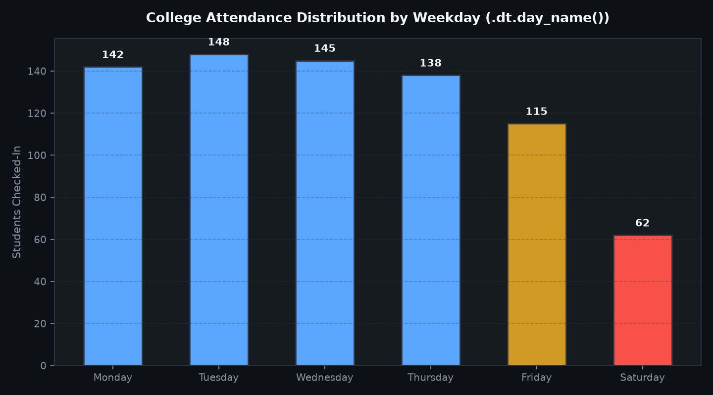
Code Example 1 (College): Extracting Weekday and Check-In Timing
Code Example 2 (E-Commerce): Identifying Peak Ordering Hours
5. Generating Sequences with pd.date_range()
Real-world projects mein aksar aapko missing dates identify karne ke liye, regular sensor intervals define karne ke liye, ya financial calendars generate karne ke liye artificial date sequences banani padti hain. Iska primary constructor pd.date_range() hai.
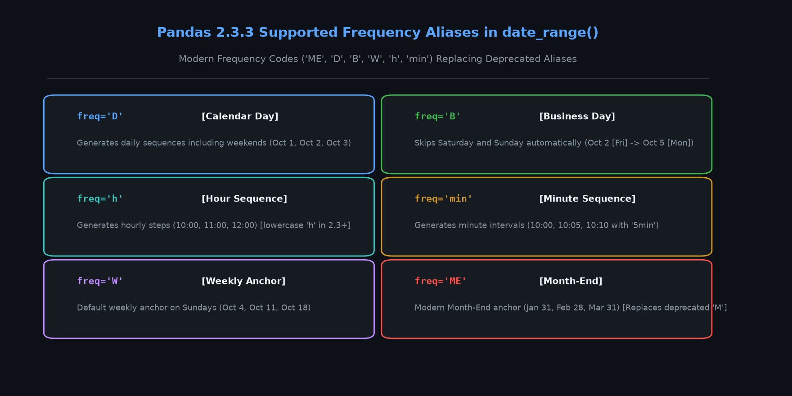
Older tutorials often use freq='M' (Month End), freq='H' (Hour), or freq='T' (Minute).
Pandas 2.3.3 Standard:
• Use 'ME' for MonthEnd (passing 'M' raises a FutureWarning!).
• Use 'MS' for MonthStart.
• Use lowercase 'h' for Hours and 'min' for Minutes.
Code Example 1 (College): Academic Calendar Generation (Business Days Only)
Code Example 2 (IoT): Generating a 5-Minute Sensor Sampling Grid
6. Sorting and Filtering by Dates
Real-world datasets aksar chronological sequence mein arrive nahi hote — server logs network latency ki wajah se out-of-order store ho sakte hain. Time series analysis ka pehla rule hota hai: Hamesha data ko chronologically sort karein!
Filtering Boundaries: Inclusive vs. Exclusive
Jab aap date filter karte hain (jaise df['date'] <= '2026-10-07'), agar column mein time component bhi present hai (jaise 2026-10-07 19:15:00), toh string '2026-10-07' internally 2026-10-07 00:00:00 (midnight) evaluate hota hai!
Consequence: October 7th ke daytime orders silently exclude ho jayenge! Isliye ya toh .dt.date compare karein ya end boundary ko '2026-10-07 23:59:59' set karein.
Code Example 1 (College): Filtering Attendance Records in a Date Window
Code Example 2 (E-Commerce): Chronological Ordering and Week 1 Filtering
7. Working with the DatetimeIndex
Jab aap kisi datetime column ko DataFrame ka row index bana dete hain (df.set_index('timestamp')), toh Pandas ka standard RangeIndex convert ho jata hai specialized DatetimeIndex mein. Yeh pure time series ecosystem ka backbone hai.
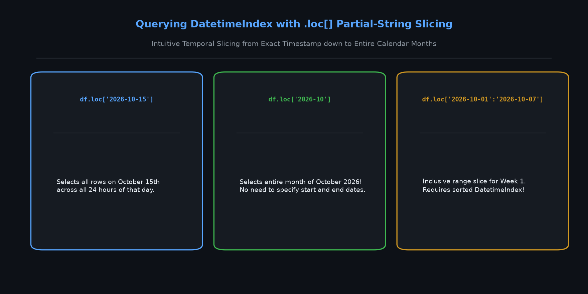
Superpowers of a DatetimeIndex:
- Partial-String Slicing: Pure month ko slice karne ke liye dates pass karne ki zaroorat nahi hoti:
df.loc['2026-10']automatically October ke sare records return karta hai! - Year Slicing:
df.loc['2026']pure saal ka data filter kar deta hai. - Time-Series Operations: Resampling (
resample()) aur irregular frequency alignment (asfreq()) ke liye DatetimeIndex mandatory prerequisite hai!
Code Example 1 (College): DatetimeIndex Partial-String Slicing
Code Example 2 (IoT): Fast Timestamp Coordinate Lookup
8. Time Differences using Timedelta
Jab aap do timestamps ko subtract karte hain (df['check_out'] - df['check_in']), toh result numeric number nahi balki ek pd.Timedelta object hota hai.
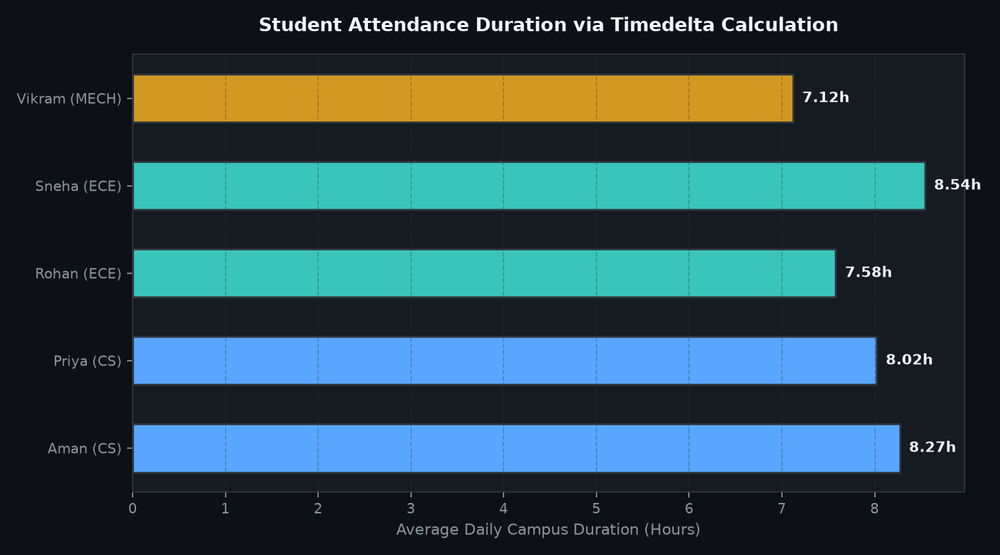
Converting Timedelta to Decimal Hours or Minutes:
Duration ko downstream analytics ya statistical modeling mein use karne ke liye, use decimal hours mein convert kiya jata hai using .dt.total_seconds() / 3600.0:
Code Example 1 (College): Calculating Student Campus Stay Duration
Code Example 2 (E-Commerce): Delivery Fulfillment Lead Time
9. Date Arithmetic and Offsets — Timedelta vs. DateOffset
Aksar developers sochte hain ki kisi date mein 1 mahina add karne ke liye + pd.Timedelta(days=30) kar dena kaafi hai. Yeh ek bohot bada financial bug create karta hai!
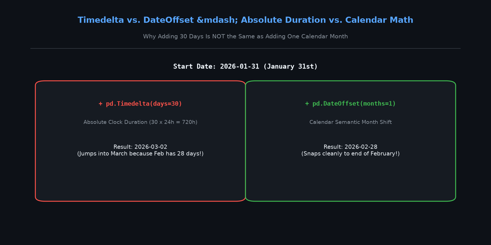
pd.Timedelta(days=30): Strictly adds 30 × 24 = 720 hours. If you start on January 31st, adding 30 days lands on March 2nd (because February has only 28 days)!
pd.DateOffset(months=1): Understands human Gregorian calendar semantics! Adding 1 month to January 31st snaps cleanly to February 28th (the end of the next calendar month).
Code Example 1 (College): Assignment Deadlines Calculation
Code Example 2 (E-Commerce): Return Window vs. Billing Cycle Offset
10. Resampling with resample() — Downsampling and Upsampling
Jab aapke paas high-frequency data ho (jaise har second ya minute ke e-commerce orders ya sensor pings) aur aapko higher-level trends dekhne hon (jaise Daily ya Monthly sales), tab regular groupby() ke bajaye Pandas ka powerful resample() method use hota hai.
Resampling time series data ke frequency rate ko change karne ka process hai. Resampling do directions me kaam karti hai:
- Downsampling (Higher to Lower Frequency): Minutes ya Hours ko Days ya Months me condense karna. Isme multiple data points aggregate hokar ek single summary number banate hain (e.g.,
sum(),mean(),max()). - Upsampling (Lower to Higher Frequency): Daily ya Monthly data ko Hourly ya Daily grid par expand karna. Isme new empty slots create hote hain jinhe fill (jaise
ffill()) ya interpolate karna padta hai.
resample() call karne se pehle DataFrame ya Series ka Index ek valid DatetimeIndex hona zaroori hai. Agar datetime kisi regular column me hai, pehle df.set_index('timestamp') call karein ya on='timestamp' parameter pass karein.
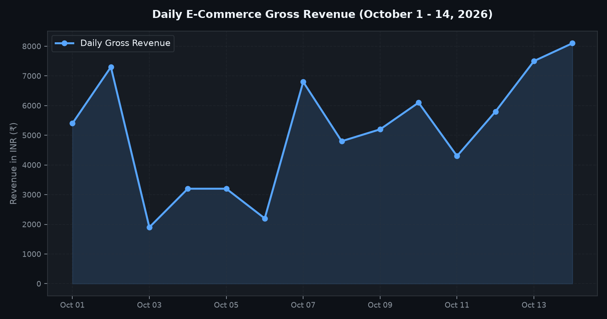
df.resample('D')['revenue'].sum() over a multi-day timeline.| Modern Frequency Alias | Meaning | Old Deprecated Alias | Example Usage |
|---|---|---|---|
'D' |
Calendar Day | 'D' |
df.resample('D').sum() |
'h' |
Hourly (Lowercase in Pandas 2.x) | 'H' |
df.resample('6h').mean() |
'min' |
Minute | 'T' |
df.resample('15min').count() |
's' |
Second | 'S' |
df.resample('30s').last() |
'ME' |
Month End | 'M' (Deprecated) |
df.resample('ME').sum() |
'MS' |
Month Start | 'MS' |
df.resample('MS').first() |
'W' |
Weekly | 'W' |
df.resample('W').mean() |
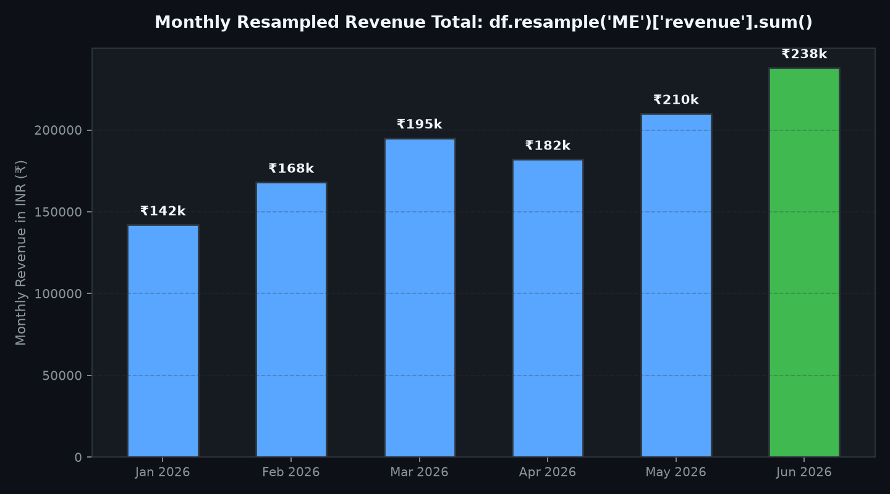
resample('ME').sum() comparing total monthly business velocity.Code Example 1 (Daily Downsampling): 48 Hourly E-Commerce Revenue Records
Code Example 2 (Multi-Metric Aggregation with .agg()): Volume & Total
11. asfreq() vs. resample() — Point Sampling vs. Bin Aggregation
Bohot se beginners asfreq() aur resample() ko confuse karte hain kyunki dono kisi time series ko regular frequency grid par standardize karte hain. Lekin unka internal mechanism bilkul alag hota hai:
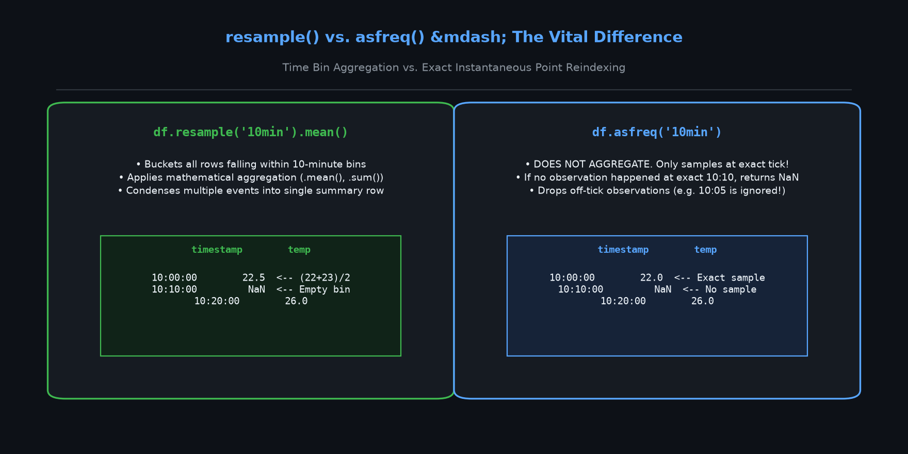
asfreq() samples exact timestamp values, whereas resample() collects all records in an interval bin and aggregates them.| Feature | resample('10min') |
asfreq('10min') |
|---|---|---|
| Core Purpose | Bin-based mathematical aggregation | Instantaneous point snapshot / re-indexing |
| Handling Observations | Collects all points falling inside [10:00, 10:10) and applies sum(), mean(), etc. |
Sirf exactly 10:00:00, 10:10:00, 10:20:00 ke timestamps ko lookup karta hai. Beech ke points ignore ho jaate hain. |
| Missing Exact Timestamps | Agar kisi 10-minute bin me koi record na ho, tab NaN aayega. |
Agar exact 10:10:00 par koi record nahi tha, seedhe NaN produce karega bhale hi 10:05 par record tha. |
| Best Real-Life Use Case | Sales volume, website pageviews, rainfall totals, transaction amounts. | Weather snapshots (e.g., exact hourly temperature snapshot), stock price at market open/close. |
Code Example 1: Comparing asfreq() and resample() on Irregular Sensor Timestamps
Observation: Notice how asfreq('10min') reported NaN at 10:10:00 because 10:05 reading ko usne drop kar diya! Jabki resample('10min').mean() ne 10:00 aur 10:05 dono readings ka average (22.0 + 23.0) / 2 = 22.5 accurately calculate kiya.
12. Rolling Windows & Moving Averages — Smoothing Noise & Detecting Trends
Daily time series data me aksar high noise aur day-to-day volatility hoti hai (jaise weekend spikes, festival sales, ya momentary server surges). Agar aap raw line plot draw karenge to graph zig-zag jagged dikhega jisse underlying long-term trend pehchanna mushkil ho jata hai.
Rolling Window (Moving Average) ek dynamic sliding window create karta hai jo chronological order me aage badhti hai aur trailing N observations ka summary (mean, sum, std) compute karti hai.
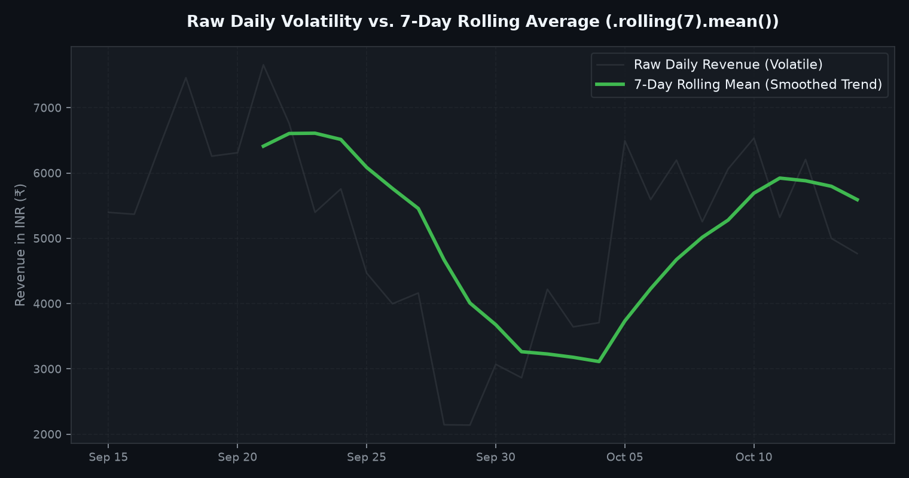
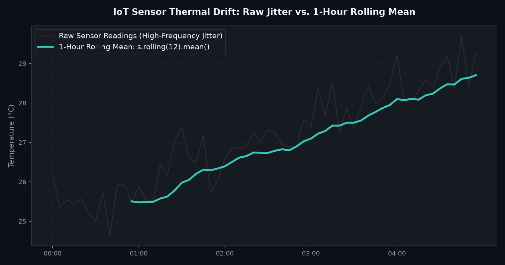
Understanding min_periods Parameter
Jab aap df['val'].rolling(window=3).mean() likhte hain, by default Pandas ko calculation ke liye poore 3 observations chahiye hote hain. Isliye pehle 2 rows me NaN aata hai.
Agar aap chahte hain ki shuruati rows me bhi calculation ho (e.g., pehle din sirf Day 1 ka average, doosre din Day 1 + Day 2 ka average), to aap min_periods=1 specify kar sakte hain:
Code Example 1: 7-Day E-Commerce Revenue 3-Day Moving Average
Code Example 2: Rolling Standard Deviation (Volatility Band)
13. Shifting & Percentage Changes — shift(), diff(), and pct_change()
Time series data me aksar hume compare karna hota hai: "Pichle din se sales kitni badhi?" ya "Kal ke muqable kitna percent growth ya drop hua?". Is chronological comparison ke liye Pandas teen complementary methods provide karta hai:
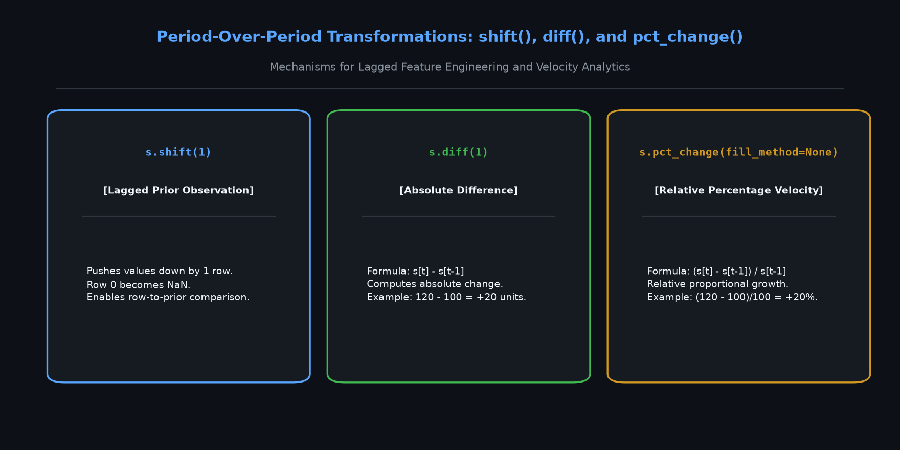
shift(1) displaces index rows, diff(1) computes absolute subtraction \(V_t - V_{t-1}\), and pct_change(fill_method=None) computes relative rate \((V_t - V_{t-1}) / V_{t-1}\).| Method | Mathematical Formula | Returned Value Type | Key Pandas 2.x Syntax Rule |
|---|---|---|---|
s.shift(periods=1) |
\(V_{t-1}\) | Same as original column (lagged by 1 row) | Use negative periods (e.g. shift(-1)) to look forward (lead). |
s.diff(periods=1) |
\(V_t - V_{t-1}\) | Absolute numerical difference | Equivalent to s - s.shift(1). First row is always NaN. |
s.pct_change(fill_method=None) |
\( rac{V_t - V_{t-1}}{V_{t-1}}\) | Relative growth percentage (ratio) | Mandatory in modern Pandas: Always pass fill_method=None to prevent deprecation warnings. |
Code Example 1: Tracking Day-over-Day Revenue Changes
Code Example 2: Lead Slicing for Predicting Next-Hour Demand
14. Time Zones & UTC Conversion — Naive vs. Aware Timestamps
Global systems jaise Amazon, Netflix, ya multinational banking servers alag-alag countries se transactions receive karte hain. Agar ek transaction London me raat ke 11:30 PM par hua aur doosra Mumbai me subah ke 05:00 AM par, to chronological order decide karne ke liye universal clock reference zaroori hota hai.
Pandas me datetime objects do tarah ke hote hain:
- Timezone-Naive (Default): Isme koi geographic location ya UTC offset info nahi hoti (e.g.,
2026-10-15 12:00:00). System ko pata nahi hota ki yeh IST hai, GMT hai, ya EST. - Timezone-Aware: Isme standard IANA timezone database ka tag hota hai (e.g.,
2026-10-15 12:00:00+00:00for UTC ya+05:30for Asia/Kolkata).
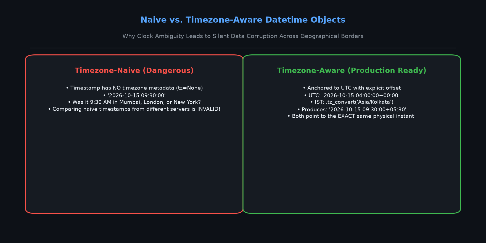
tz_localize() and regional conversion via tz_convert().| Operation | Pandas Method | Initial State | Resulting State |
|---|---|---|---|
| Localize | s.dt.tz_localize('UTC') |
Naive (No timezone attached) | Aware (Tag attached, clock digits unchanged) |
| Convert | s.dt.tz_convert('Asia/Kolkata') |
Aware (Must already have a timezone) | Aware (Clock digits shifted to new zone offset) |
Pandas will raise a strict TypeError: Cannot compare tz-naive and tz-aware timestamps agar aap naive aur aware objects ko compare ya subtract karenge. Golden Rule: Always standardize your entire data pipeline to UTC first!
Code Example 1: Localizing to UTC and Converting to IST (Asia/Kolkata)
Code Example 2: Converting a Full DataFrame Column Across Time Zones
15. Missing & Irregular Time Series Data — Detection, Reindexing & Interpolation
Real-world time series data kabhi perfectly continuous nahi hota. Wi-Fi drops, battery exhaust, sensor disconnects, ya weekend market holidays ke wajah se series me gaps aa jate hain.
Time series me missingness do tarah ki hoti hai:
- Explicit Missingness (
NaNvalues): Timestamp row exist karti hai, lekin value cell missing /NaNhoti hai. - Implicit Missingness (Missing Timestamps): Poori timestamp row hi gayab hoti hai (e.g., 10:00 ke baad direct 10:20 ki row hai, 10:10 gayab hai).
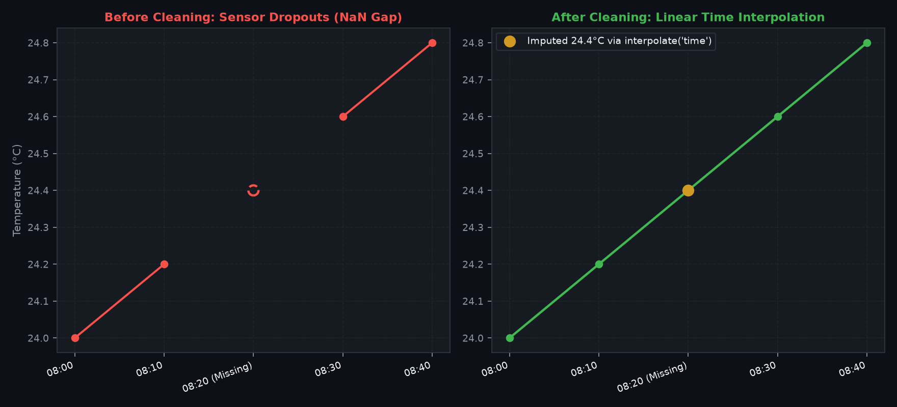
| Technique | Method Call | Nature of Imputation | Best Suitable Use Case |
|---|---|---|---|
| Forward Fill | df.ffill() |
Pichli known value ko aage carry karta hai (Step function) | Bank account balance, stock split price, discrete settings. |
| Backward Fill | df.bfill() |
Agli known value ko peeche copy karta hai | Target values, future contract settlements. |
| Linear Interpolation | df.interpolate(method='linear') |
Do consecutive points ke beech straight line draw karta hai | Regularly spaced continuous sensor telemetry (temperature, pressure). |
| Time-Weighted Interpolation | df.interpolate(method='time') |
Timestamps ke exact time difference ke proportional weight deta hai | Irregularly spaced time series (e.g. 5 min gap vs 45 min gap). |
Code Example 1: Exposing Implicit Gaps with asfreq() and Filling
Observation: 10:00 par reading 20.0°C thi aur 13:00 par 26.0°C. 3 ghante me total increase +6.0°C tha, yani exact +2.0°C per hour! interpolate(method='time') ne exactly 22.0°C (11:00) aur 24.0°C (12:00) impute kiya.
16. Time-Based Grouping & Feature Engineering for Machine Learning
Predictive modeling aur machine learning algorithms (jaise XGBoost ya Random Forest) raw datetime strings ko direct process nahi kar sakte. Unhe cyclical temporal features chahiye hote hain. Time feature engineering ke zariye hum high-signal indicators derive karte hain.
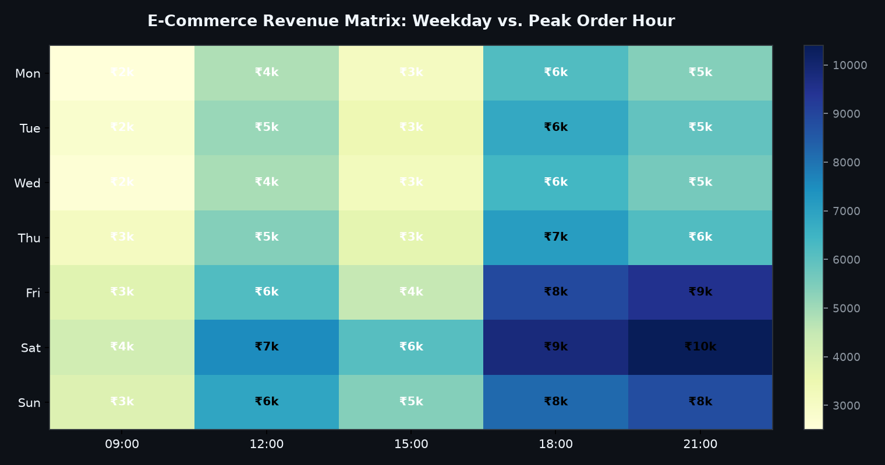
| Engineered Feature | Pandas Implementation | Domain Value / Signal |
|---|---|---|
hour_of_day |
df['ts'].dt.hour |
Peak vs non-peak traffic, delivery rush hours. |
day_of_week |
df['ts'].dt.dayofweek |
Working day vs weekend shopping pattern. |
is_weekend |
df['ts'].dt.dayofweek.isin([5, 6]).astype(int) |
High-impact binary flag for consumer behavior. |
is_month_end |
df['ts'].dt.is_month_end.astype(int) |
Salary credit days, billing cycles, sales quotas. |
quarter |
df['ts'].dt.quarter |
Corporate quarterly financial performance cycles. |
Code Example 1: Extracting 6 ML Temporal Features from Raw Orders
17. Decision Tree & 14 Common DateTime Traps
Time series data handling me sabse zyada silent bugs aur runtime crashes aate hain. Niche diye gaye decision tree flowchart aur comprehensive troubleshooting guide ko follow karein taaki aapka production code 100% robust aur bug-free rahe.
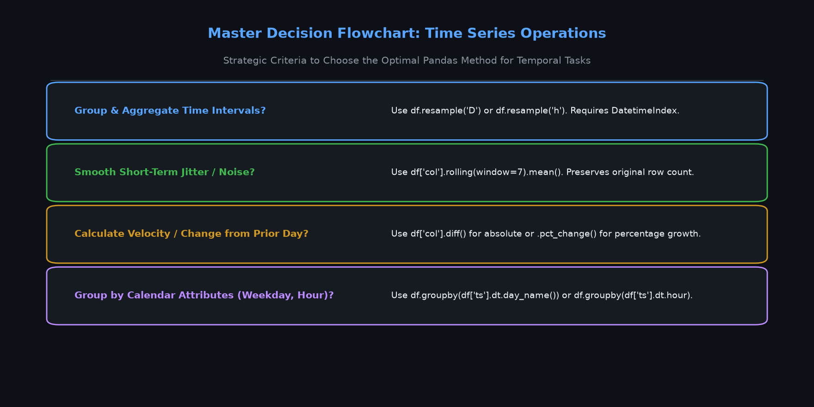
resample(), rolling(), shift(), asfreq(), and groupby() based on your analytical goal.| # | Common Trap / Symptom | Underlying Root Cause | Production Fix & Best Practice |
|---|---|---|---|
| 1 | ParserError: Unknown string format |
Dataset contains corrupted text strings or mixed dirty formats. | Use pd.to_datetime(s, errors='coerce') to convert corrupt rows to NaT without crashing. |
| 2 | Silent date swap (Month & Day swapped) | Parsing Indian/European DD/MM/YYYY strings with American MM/DD/YYYY default. |
Explicitly provide dayfirst=True or pass strict format='%d/%m/%Y'. |
| 3 | AttributeError: 'Series' object has no attribute 'year' |
Calling datetime attributes directly on a Series without the .dt namespace accessor. |
Always write df['col'].dt.year instead of df['col'].year. |
| 4 | AttributeError: 'DatetimeIndex' object has no attribute 'dt' |
Trying to use .dt on index or calling index properties on non-datetime index. |
For index, access attributes directly: df.index.year or df.index.day_name(). |
| 5 | FutureWarning: 'M' is deprecated, please use 'ME' |
Using deprecated frequency alias letters from older Pandas 1.x versions. | Adopt modern Pandas 2.x standard: 'ME' (Month End), 'MS' (Month Start), 'h' (Hourly), 'min' (Minutes). |
| 6 | FutureWarning: The default fill_method='pad' in pct_change is deprecated |
Calling pct_change() without specifying fill behavior. |
Always write df['val'].pct_change(fill_method=None). |
| 7 | TypeError: Only valid with DatetimeIndex, TimedeltaIndex or PeriodIndex |
Calling df.resample('D') when DataFrame index is a regular RangeIndex. |
Set the index first via df = df.set_index('timestamp') or pass on='timestamp'. |
| 8 | TypeError: Cannot compare tz-naive and tz-aware timestamps |
Attempting mathematical comparison between localized UTC timestamp and plain local string. | Standardize all timestamps: s.dt.tz_localize('UTC') before filtering or slicing. |
| 9 | Month length arithmetic bug (30-day assumption) | Adding pd.Timedelta(days=30) to January 31 lands on March 2 instead of February end. |
Use calendar-aware pd.DateOffset(months=1) which correctly snaps to February 28. |
| 10 | Data leakage in ML time series train-test split | Using random row shuffle (train_test_split(shuffle=True)) leaking future into past. |
Always perform chronological time splits: past 80% for train, latest 20% for test. |
| 11 | Overwriting original timezone during conversion | Calling tz_localize() on an already timezone-aware Series raises TypeError. |
Use tz_convert() if timezone already exists; use tz_localize(None) to strip timezone. |
| 12 | Dropping valid intra-interval data with asfreq() |
Using asfreq() when expecting cumulative sales volume across an interval. |
Use resample().sum() for volume totals; keep asfreq() only for instantaneous gauge snapshots. |
| 13 | Forward-filling before resampling creating phantom data | Running ffill() on raw irregularly spaced rows before aggregating into bins. |
Always aggregate into regular bins first via resample(), then apply imputation methods. |
| 14 | String subtraction runtime failure | Executing df['check_out'] - df['check_in'] when columns are stored as object/string. |
Convert columns with pd.to_datetime() first before calculating differences. |
18. Guided Capstone Case Study A — College Biometric Attendance Time Analytics
Is guided case study me hum ek real Indian engineering college ke biometric smart card access system ka data analyze karenge. Smart card turnstiles entry aur exit gate par exact timestamps record karte hain. Hamara mission hai students ke daily check-in patterns, department-wise average duration, late entries, aur peak arrival hours identify karna.
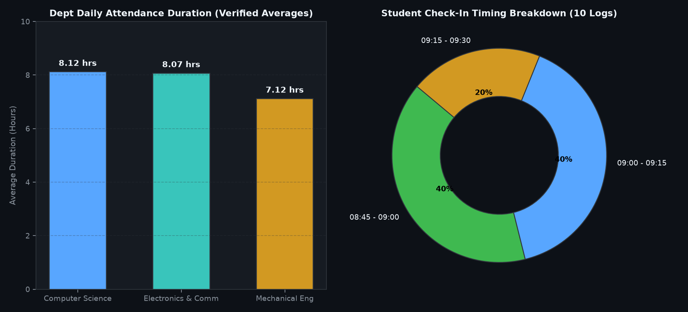
The Raw Attendance Dataset (10 Records)
Dataset contains 10 records across CS, ECE, and MECH departments over October 12 and 13, 2026:
| student_id | student | department | check_in | check_out | status |
|---|---|---|---|---|---|
| 101 | Aman | CS | 2026-10-12 08:55:00 | 2026-10-12 17:10:00 | Present |
| 102 | Priya | CS | 2026-10-12 09:02:00 | 2026-10-12 17:05:00 | Present |
| 103 | Rohan | ECE | 2026-10-12 09:15:00 | 2026-10-12 16:45:00 | Present |
| 104 | Sneha | ECE | 2026-10-12 08:50:00 | 2026-10-12 17:20:00 | Present |
| 105 | Vikram | MECH | 2026-10-12 09:30:00 | 2026-10-12 16:30:00 | Present |
| 101 | Aman | CS | 2026-10-13 08:58:00 | 2026-10-13 17:15:00 | Present |
| 102 | Priya | CS | 2026-10-13 09:05:00 | 2026-10-13 17:00:00 | Present |
| 103 | Rohan | ECE | 2026-10-13 09:10:00 | 2026-10-13 16:50:00 | Present |
| 104 | Sneha | ECE | 2026-10-13 08:48:00 | 2026-10-13 17:25:00 | Present |
| 105 | Vikram | MECH | 2026-10-13 09:25:00 | 2026-10-13 16:40:00 | Present |
Full Verified Python Pipeline — College Attendance Analytics
19. Guided Capstone Case Study B — Multi-Domain Capstone: E-Commerce & IoT Telemetry
Real-world data science me aapko multiple time series domains ke sath deal karna padta hai: ek taraf financial aur transactional time series (jaise e-commerce orders) aur doosri taraf continuous hardware telemetry (jaise IoT industrial manufacturing sensors). Yeh dual case study dono pipelines ko implement karti hai.
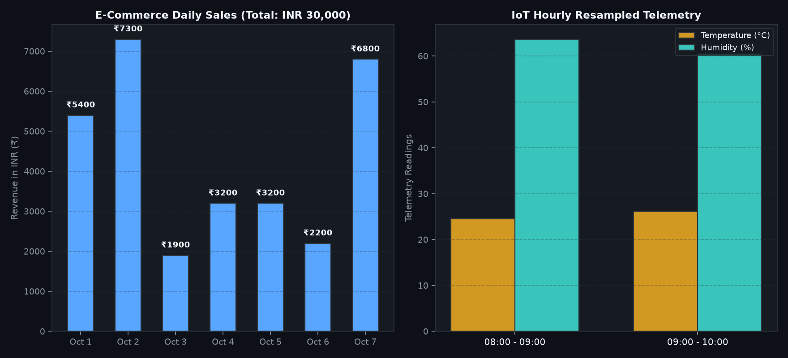
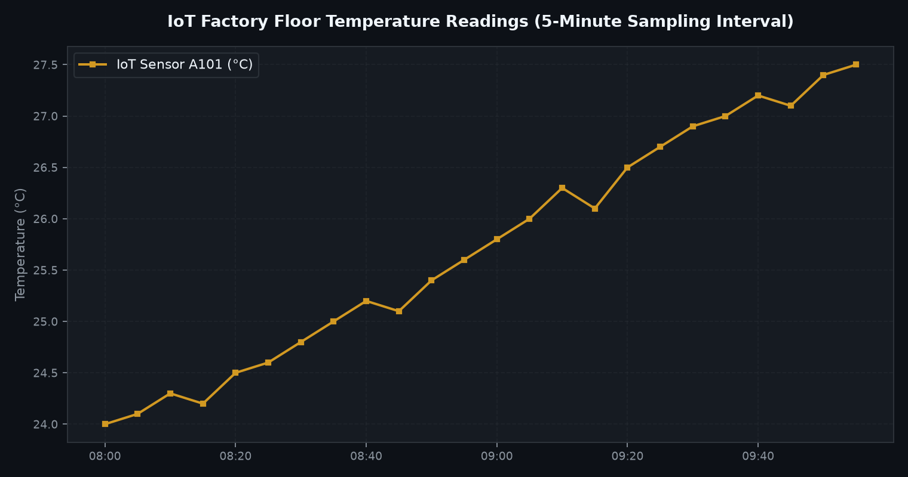
Part A: E-Commerce Sales Time Series Pipeline (INR 30,000 Total Gross Revenue)
Part B: Smart Factory IoT Telemetry Cleaning & Hourly Resampling
20. 21 Interactive Practice Questions & Capstone Mini-Project
Apne concepts ko test karne ke liye niche diye gaye interactive accordions ko click karke open karein. Har category me comprehensive conceptual clarity aur real Python output provide kiya gaya hai.
Part 1: 5 Beginner Conceptual & Syntax Questions
Q1: What is the fundamental difference between pd.Timestamp and Python's built-in datetime.datetime?
Answer: Python ka standard datetime.datetime microsecond (\(10^{-6}\) seconds) precision support karta hai aur pure Python object ke taur par store hota hai jisse large datasets par loop karna slow ho jata hai.
Pandas ka pd.Timestamp internally NumPy ke datetime64[ns] format par built hai, jo nanosecond (\(10^{-9}\) seconds) precision support karta hai, C-contiguous contiguous memory blocks me vectorize hota hai, aur rich accessors (.dt) aur calendar offsets provide karta hai.
Q2: Why does pd.to_datetime('15/10/2026') fail or misbehave without dayfirst=True?
Answer: By default, pd.to_datetime() American standard MM/DD/YYYY format follow karta hai. String '15/10/2026' me pehla number 15 hai, aur calendar me 15th month exist nahi karta! Agar '05/10/2026' ho to silently 10th May parse kar lega jabki aapka intended date 5th October tha.
Indian aur European formats ke liye hamesha dayfirst=True pass karein ya strict format='%d/%m/%Y' use karein.
Q3: Why can't we write df['timestamp'].year directly on a Series?
Answer: Ek pd.Timestamp scalar object ke paas direct .year attribute hota hai. Lekin jab timestamps ek pd.Series ke andar hote hain, tab series ke columns aur generic methods ke sath namespace collision prevent karne ke liye Pandas saare datetime properties ko .dt namespace accessor ke andar encapsulate karta hai (e.g. df['timestamp'].dt.year).
Q4: What is NaT in Pandas and how is it related to np.nan?
Answer: NaT stands for "Not a Time". Yeh Pandas ka specialized sentinel value hai jo datetime aur timedelta columns me missing values ko represent karta hai (equivalent to np.nan for float columns). pd.isna(pd.NaT) returns True.
Q5: What is the modern replacement for the deprecated 'M' frequency alias in Pandas 2.x?
Answer: Pandas 2.x me 'M' deprecate ho chuka hai kyunki yeh ambiguous tha (Month End ya Minute). Modern syntax me Month End ke liye 'ME', Month Start ke liye 'MS', Hourly ke liye lowercase 'h', aur Minute ke liye 'min' use kiya jata hai.
Part 2: 5 Intermediate Practical Questions
Q6: How do you extract the full English weekday name (e.g., 'Monday') from a Datetime Series?
Answer: df['timestamp'].dt.day_name() method use karein. Example:
Q7: How to generate business days (Monday to Friday only) for the first two weeks of October 2026?
Answer: pd.date_range() me frequency alias 'B' (BusinessDay) specify karein:
Q8: What is the difference between adding pd.Timedelta(days=30) and pd.DateOffset(months=1) to January 31?
Answer:
Timedelta(days=30)ek absolute physical clock offset hai (exactly \(30 imes 24 = 720\) hours). January 31 me 30 days add karne par result March 2 aayega.DateOffset(months=1)calendar-aware semantic increment karta hai. January 31 me 1 month offset add karne par Pandas automatically February ke end (February 28) par snap karta hai.
Q9: How do you resample hourly server logs to 6-hour bins calculating both the total request count and max response time?
Answer: df.resample('6h').agg() use karein dictionary mapping ke sath:
Q10: Why does s.pct_change() trigger a Future warning in modern Pandas, and what is the fix?
Answer: Older Pandas me pct_change() default taur par missing values ko forward-fill (fill_method='pad') karta tha, jo aksar silently incorrect financial returns produce karta tha. Modern Pandas 2.x me yeh behavior deprecated hai. Fix: hamesha s.pct_change(fill_method=None) specify karein.
Part 3: 3 Practical Coding Scenarios
Q11: Calculate total hours worked from biometric check-in and check-out logs as decimal floats.
Q12: Smooth a noisy daily sales series using a 7-day rolling window without initial NaN values.
Q13: Localize a timezone-naive UTC server log series and convert it to Indian Standard Time (Asia/Kolkata).
Part 4: 5 Multiple Choice Questions (MCQs) with Explanations
Q14: Which of the following is the valid Pandas 2.x frequency string for calendar Month-End resampling?
A) 'M'
B) 'MONTH'
C) 'ME' (Correct)
D) 'END_M'
Explanation: In modern Pandas, 'M' raises a FutureWarning. 'ME' (Month End) and 'MS' (Month Start) are the standardized canonical aliases.
Q15: What does pd.to_datetime(s, errors='coerce') do when it encounters an invalid date string like 'corrupt-date-99'?
A) Raises a ValueError and stops program execution
B) Replaces it with the current system date
C) Replaces it with pd.NaT (Not a Time) without crashing (Correct)
D) Skips the row and deletes it automatically
Explanation: errors='coerce' ensures resilient parsing by converting unparseable malformed text into pd.NaT so data pipelines don't abort.
Q16: Which method standardizes a time series to a regular frequency grid by instantaneous point lookup rather than bucket aggregation?
A) df.resample()
B) df.asfreq() (Correct)
C) df.rolling()
D) df.groupby()
Explanation: asfreq() re-indexes the series to regular grid slots selecting exact timestamp matches, leaving NaN if no observation was logged at that exact second/minute.
Q17: What error is raised when you subtract a timezone-naive timestamp from a timezone-aware timestamp?
A) ValueError: Incompatible time deltas
B) IndexError: Missing timezone offset
C) TypeError: Cannot compare tz-naive and tz-aware timestamps (Correct)
D) No error; Pandas assumes both are UTC
Explanation: Pandas enforces strict temporal safety and refuses to perform mathematical operations between localized and unlocalized timestamps without explicit conversion.
Q18: Which interpolation method should be used for physical telemetry with irregular elapsed gaps?
A) df.interpolate(method='pad')
B) df.interpolate(method='linear')
C) df.interpolate(method='time') (Correct)
D) df.interpolate(method='nearest')
Explanation: method='time' weights the slope according to the actual elapsed duration between index timestamps, making it mathematically superior for non-uniform sampling.
Part 5: 2 Real-World Debugging Challenges
Q19: Silent Bug — Invoices dated '05/10/2026' parsed as May 10 instead of October 5.
Problem: df['invoice_date'] = pd.to_datetime(df['raw_date']) produced May 10 for an Indian client.
Fix: Specify dayfirst=True or pass the format pattern:
Q20: Runtime Crash — TypeError: Only valid with DatetimeIndex when calling resample('D').
Problem: The DataFrame had an integer index (RangeIndex) with the datetime stored as a regular column named 'timestamp'.
Fix: Set the column as the index first or use the on argument:
Part 6: Capstone Mini-Project — Hospital ICU Occupancy Analytics
Q21: Mini-Project Challenge — Build an End-to-End Hospital ICU Stay and Bed Turnover Pipeline.
Scenario: Ek city hospital ke ICU ward me 5 critical patients admit hue. Unke admission aur discharge timestamps niche diye gaye hain:
21. Master Summary, High-Density Cheat Sheet & What's Next
Aapne Pandas ke sabse powerful aur industry-critical module DateTime & Time Series Data ko master kar liya hai! Niche diye gaye summary bullet points aur high-density cheat sheet table ko revise karein.
Core Conceptual Takeaways
- String vs DateTime: Dates ko string ke bajaye hamesha
datetime64[ns]format me convert karein viapd.to_datetime()taaki vectorized arithmetic aur date filtering enable ho sake. - The .dt Accessor: Series ke har timestamp se temporal components (year, month, hour, day_name) extract karne ke liye
.dtnamespace mandatory hai. - DatetimeIndex: Index me datetime hone par partial-string slicing (
df.loc['2026-10']) aur chronological resampling automate ho jati hai. - Timedelta vs DateOffset: Physical exact time differences (seconds, hours, days) ke liye
pd.Timedeltause karein; calendar month/year snapping ke liyepd.DateOffsetuse karein. - Resampling vs Rolling:
resample()frequency change karke rows aggregate karta hai;rolling()fixed window move karke noise smooth karta hai without changing row count. - shift(), diff(), and pct_change(): Period-over-period growth aur trends track karne ke universal building blocks hain. Modern Pandas me hamesha
pct_change(fill_method=None)likhein. - Time Zones: Multi-region systems me naive timestamps ko UTC me localize karein (
tz_localize('UTC')), fir regional timezone me convert karein (tz_convert('Asia/Kolkata')).
High-Density DateTime Cheat Sheet
| Task / Operation | Canonical Modern Pandas Syntax | Important Notes / Output |
|---|---|---|
| Convert string column | pd.to_datetime(df['date'], dayfirst=True, errors='coerce') |
Avoids month-day swaps; corrupt strings become NaT. |
| Extract year, month, day | df['date'].dt.year, .dt.month, .dt.day |
Returns integer Series. |
| Extract weekday name | df['date'].dt.day_name() |
Returns string name like 'Monday', 'Tuesday'. |
| Generate regular dates | pd.date_range('2026-10-01', periods=10, freq='D') |
Can use 'B' (business), 'h' (hour), 'min'. |
| Partial-string index slice | df.loc['2026-10-01':'2026-10-07'] |
Requires sorted DatetimeIndex. Both ends inclusive. |
| Duration in hours | (df['end'] - df['start']).dt.total_seconds() / 3600.0 |
Exact decimal hours for wage, attendance, or SLA calculation. |
| Calendar month arithmetic | ts + pd.DateOffset(months=1) |
Smart calendar snapping (e.g. Jan 31 -> Feb 28). |
| Downsample to daily sum | df.resample('D')['val'].sum() |
Condenses high-frequency logs to daily totals. |
| Downsample to month-end | df.resample('ME')['val'].sum() |
Use modern 'ME' instead of deprecated 'M'. |
| Point snapshot sampling | df.asfreq('10min') |
Re-indexes to regular slots without interval binning. |
| 7-day moving average | df['val'].rolling(window=7, min_periods=1).mean() |
Smooths daily volatility; no leading NaNs with min_periods=1. |
| Previous day value | df['val'].shift(1) |
Lags column by 1 step. Negative shifts look ahead. |
| Day-over-day absolute change | df['val'].diff(1) |
Equivalent to \(V_t - V_{t-1}\). |
| Percentage growth rate | df['val'].pct_change(fill_method=None) |
Relative growth ratio without deprecation warning. |
| Timezone localization | df['ts'].dt.tz_localize('UTC') |
Attaches UTC reference to timezone-naive timestamps. |
| Timezone conversion | df['ts_utc'].dt.tz_convert('Asia/Kolkata') |
Converts from UTC to IST (+05:30) adjusting clock digits. |
| Time-weighted interpolation | df['sensor'].interpolate(method='time') |
Fills missing telemetry proportionally to elapsed duration. |
15-Term DateTime Glossary
| Term | Definition & Operational Meaning |
|---|---|
| Timestamp | Ek exact, discrete point in continuous time with nanosecond precision (pd.Timestamp). |
| DatetimeIndex | Pandas Index jo timestamps se bana ho, enabling partial string indexing aur resampling. |
| Timedelta | Do timestamps ke beech ka absolute elapsed physical duration (days, seconds, microseconds). |
| DateOffset | Calendar-aware temporal increment jo months, business days, aur holidays ko respect karta hai. |
| Resampling | Time series data ke frequency rate ko change karna (Downsampling ya Upsampling). |
| Downsampling | High-frequency data (minutes/hours) ko lower frequency (days/months) me aggregate karna. |
| Upsampling | Low-frequency data ko high-frequency grid par expand karna requiring imputation. |
| asfreq() | Time series ko fixed frequency par point-reindex karna without bin aggregation. |
| Rolling Window | Ek sliding window jo trailing observations ka statistical moving average compute karti hai. |
| Expanding Window | Ek cumulative window jo start of time se lekar current row tak ka statistic compute karti hai. |
| Lag / Shift | Time series values ko pichle periods me push karna (shift(1)) for prior comparison. |
| Lead | Future time series values ko current row par pull karna (shift(-1)) for prediction targets. |
| Timezone-Naive | Timestamp jisme koi geographical location ya UTC offset info nahi hoti. |
| Timezone-Aware | Standard IANA timezone database tag ke sath localized timestamp (e.g. +05:30). |
| NaT | "Not a Time" — Pandas ka missing value sentinel for datetime/timedelta data types. |
Agle topic Pandas Topic 19: Window Functions & Rolling Operations me hum time series se ek kadam aage badhkar advanced windowing architectures explore karenge: Exponentially Weighted Moving Averages (EWMA) for algorithmic trading, Expanding Windows for lifetime customer value (LTV), Custom Rolling Kernels, aur Rolling GroupBy Aggregations!